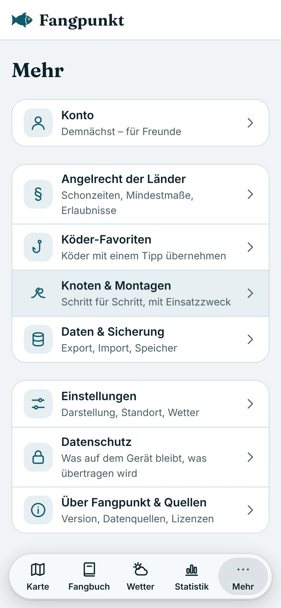

FangpunktIntern
FangpunktIntern
1 · Wo finde ich es?
Mehr → Knoten & Montagen
Oben umschalten zwischen „Knoten“ und „Montagen“.
2 · Übersicht
8 Montagen nach Angelart
Filter: Spinnfischen · Grundangeln · Posenangeln
Alle animiert, jede mit kurzem Einsatzzweck
3 · Wofür?
Erst der Zweck, dann der Aufbau
Wann und wo die Montage ihre Stärken hat
Zielfische, hier: Barsch, Zander
4 · Aufbau
Schritt für Schritt mit Beschriftung
Jedes Teil wird benannt: Blei, Perle, Wirbel, Vorfach, Haken, Köder
Hauptschnur blau, Vorfach orange
Bedienung wie bei den Knoten: Abspielen, Anhalten, vor und zurück
5 · Material und Knoten
Was du brauchst
Materialliste je Montage
Schritte zum Antippen und Tipps
Passende Knoten aus dem Knoten-Bereich
6 · Verknüpft
Ein Tipp – direkt zum Knoten
Von der Montage zur passenden Knoten-Anleitung, ohne Suchen.
Neu: Montagen
Stand und nächste Schritte
Fertig
- ✓Live in der App unter Mehr → Knoten & Montagen
- ✓8 Montagen: Carolina, Texas, Drop-Shot, Free-Rig, Laufblei, Haar-Montage, feste Pose, Laufpose
- ✓Je Montage: Wofür?, Zielfische, Material, Schritte, passende Knoten, Tipps
- ✓Bei „Bewegung reduzieren“ ohne Animation
Offen
- ○Gegenprüfung der Texte und Zeichnungen
Fehler in einer Anleitung entdeckt? Bitte melden – mit Montage und Schritt.